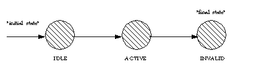

public interface Call
Call object models a telephone call.
Connections.
A two-party call has two Connections, and a conference call
has three or more Connections. Each Connection models the relationship
between a Call and an Address, where an Address identifies a particular
party or set of parties on a Call.
Provider.createCall() method, which returns a Call object that
has zero Connections and is in the Call.IDLE state. The Call
maintains a reference to its Provider for the life of that Call object.
This Provider object instance does not change throughout the lifetime of
the Call object. The Provider associated with a Call is obtained via the
Call.getProvider() method.
Call.getState() method. This state describes the current
progress of a telephone call, where is it in its life cycle, and how many
Connections exist on the Call. The Call state may be one of three values:
Call.IDLE, Call.ACTIVE, or
Call.INVALID. The following is a description of each state:
Call.IDLE |
This is the initial state for all Calls. In this state, the Call has zero
Connections, that is Call.getConnections() must
return null.
|
Call.ACTIVE |
A Call with some current ongoing activity is in this state. Calls with one
or more associated Connections must be in this state. If a Call is in this
state, the Call.getConnections() method must return an array
of size at least one.
|
Call.INVALID |
This is the final state for all Calls. Call objects which lose all of their
Connections objects (via a transition of the Connection object into the
Connection.DISCONNECTED state) moves into this state. Calls
in this state have zero Connections and these Call objects may not be used
for any future action. In this state, the Call.getConnections()
must return null.
|

Call.getConnections() method. A Call retains a reference to a
Connection only if it is not in the Connection.DISCONNECTED
state. Therefore, if a Call has a reference to a Connection, then that
Connection must not be in the Connection.DISCONNECTED state.
When a Connection moves into the Connection.DISCONNECTED state
(e.g. when a party hangs up), the Call loses its reference to that
Connection which is no longer reported via the
Call.getConnections() method.
Call.connect() methodCall.connect()
method. Applications use this method to place a telephone call from an
originating endpoint to a destination address string. The result of this
method on the call model is to create an originating and destination
Connection and move the Call into the Call.ACTIVE state. As the
new telephone call progresses during its lifetime, the state of various
objects associated with the Call may change and new objects may be created
and associated with the Call. See the specification of the
Call.connect() method below for more details.
Observer of one or more
JTAPI objects.
Starting with JTAPI 1.3, the primary way to arrange for a
provider to report events is to use Listeners, following the
pattern established in Java release 1.1
(see Event for more details).
The Observer model is supported but its use is deprecated with
this release.
CallListener interface reports all events pertaining to
the Call object. Events delivered to this interface must extend the
CallEvent interface. Applications add listeners to a Call object
via the Call.addCallListener() method.
Connection-related and TerminalConnection-related events are also reported
via the CallListener interface. These events include the
creation of these objects and their state changes. Events which are reported
via the CallListener interface pertaining to Connections and
TerminalConnections extend the ConnectionEvent interface and the
TerminalConnectionEvent interface, respectively.
An event is delivered to the application whenever the state of the Call
changes. The event interfaces corresponding to Call state changes are:
CallActiveEventID and CallInvalidEventID.
CallListener
(or an extension of that interface).
This is the final event receives by the Listener, and it is no
longer reported via the Call.getCallListeners() method.
CallListener) will direct the implementation to
send only Call-related events (including
MetaEvents). To register as a Listener at a lower
level interfaces (ConnectionListener or
TerminalConnectionListener) directs the
implementation to provide successively more detailed events.
Address.addCallListener() and
Terminal.addCallListener() (and related) methods.
These methods provide the
ability for an application to receive Call-related events when a Call
contains a particular Address or Terminal.
In particular, methods exist to add a CallListener,
ConnectionListener and
TerminalConnectionListener via Address and
Terminal.
See the specifications for
Address and Terminal for more details.
CallListener,
ConnectionListener,
TerminalConnectionListener,
Connection,
Address,
Terminal,
TerminalConnection,
CallEvent| Modifier and Type | Field and Description |
|---|---|
static int |
ACTIVE
The
Call.ACTIVE state indicates the Call has one or more
Connections, none of which are in the Connection.DISCONNECTED
state. |
static int |
IDLE
The
Call.IDLE state indicates the Call has zero Connections. |
static int |
INVALID
The
Call.INVALID state indicates the Call has lost all of
its connections - that is, all of its associated Connection objects have moved
into the Connection.DISCONNECTED state and are no longer
associated with the Call. |
| Modifier and Type | Method and Description |
|---|---|
void |
addCallListener(CallListener listener)
Adds an listener to the Call.
|
void |
addObserver(CallObserver observer)
Adds an observer to the Call.
|
Connection[] |
connect(Terminal origterm,
Address origaddr,
java.lang.String dialedDigits)
Places a telephone call from an originating endpoint to a destination
address string.
|
CallCapabilities |
getCallCapabilities(Terminal term,
Address addr)
Deprecated.
Since JTAPI v1.2. This method has been replaced by the
Call.getCapabilities() method.
|
CallListener[] |
getCallListeners()
Returns an array of all
CallListeners on this Call. |
CallCapabilities |
getCapabilities(Terminal terminal,
Address address)
Returns the dynamic capabilities for the instance of the Call object.
|
Connection[] |
getConnections()
Returns an array of Connections associated with this call.
|
CallObserver[] |
getObservers()
Returns an array of all
CallObservers on this Call. |
Provider |
getProvider()
Returns the Provider associated with the Call.
|
int |
getState()
Returns the current state of the telephone call.
|
void |
removeCallListener(CallListener listener)
Removes the given listener from the Call.
|
void |
removeObserver(CallObserver observer)
Removes the given observer from the Call.
|
static final int IDLE
Call.IDLE state indicates the Call has zero Connections.
It is the initial state of all Call objects.static final int ACTIVE
Call.ACTIVE state indicates the Call has one or more
Connections, none of which are in the Connection.DISCONNECTED
state.static final int INVALID
Call.INVALID state indicates the Call has lost all of
its connections - that is, all of its associated Connection objects have moved
into the Connection.DISCONNECTED state and are no longer
associated with the Call. A Call in this state cannot be used for future
actions.Connection[] getConnections()
Connection.DISCONNECTED state. Also, if the Call is in the
Call.IDLE state or the Call.INVALID state, this
method returns null. Otherwise, it returns one or more Connection objects.
Post-conditions:
Provider getProvider()
TsapiPlatformException - Implementation specific exception thrown if
a provider cannot be located.int getState()
Call.IDLE, Call.ACTIVE, or
Call.INVALID.
Connection[] connect(Terminal origterm, Address origaddr, java.lang.String dialedDigits) throws ResourceUnavailableException, PrivilegeViolationException, InvalidPartyException, InvalidArgumentException, InvalidStateException, MethodNotSupportedException
The Call must be in the Call.IDLE state (and therefore have
no existing associated Connections and the Provider must be in the
Provider.IN_SERVICE state. The successful effect of this
method is to place the telephone call and create and return two
Connections associated with this Call.
Address.getTerminals() and the originating Terminal
must appear on the Address (via Terminal.getAddress()). If
not, an InvalidArgumentException is thrown.
The third argument is a destination string whose value represents the address to which the telephone call is placed. This destination address must be valid and complete.
Call.connect() method returns, the Call will be in the
Call.ACTIVE state and exactly two Connections will be
created and returned. The Connection associated with the originating
endpoint is the first Connection in the returned array, and the Connection
associated with the destination endpoint is the second Connection in the
returned array. These two Connections must at least be in the
Connection.IDLE state. That is, if one of the Connections
progresses beyond the Connection.IDLE state while this
method is completing, this Connection may be in a state other than the
Connection.IDLE. This state must be reflected by an event
sent to the application.
How the Call and its associated objects progress depends upon real-world conditions. There is a large but finite number of ways in which the state of a Call may progress. It is difficult to enumerate each possible way in which the state of a Call may progress. Instead, several illustrative scenarios (also called flows) are presented for common real-world conditions. These scenarios obey the valid state transitions as defined by the Call, Connection, and TerminalConnection objects.
Two common scenarios are presented below. Note that there may exist additional scenarios very similar to these which may only differ in a single step or state change. Any implementation which adheres to the rules outlined by the Call, Connection, and TerminalConnection objects is considered a proper implementations with respect to call flows.
Call.connect() Scenario
Call.connect() method is invoked with the given
arguments. Two Connection objects are created and returned, each in the
Connection.IDLE state.
Events delivered to the application: a CallActivEv and two ConnectionCreatedEventID, one for each Connection.
Connection.IDLE state into
the Connection.CONNECTED state. A TerminalConnection is
created in the TerminalConnection.IDLE state and moves
into the to model the TerminalConnection.ACTIVE
relationship between the originating Terminal and the Connection.
Events delivered to the application: a ConnectionEvent.CONNECTION_CONNECTED for the originating Connection, a TerminalConnectionEvent.TERMINAL_CONNECTION_CREATED and a TerminalConnection.TERMINAL_CONNECTION_ACTIVE for the new TerminalConnection.
Note: Depending upon the configuration of the switch, additional
TerminalConnection objects associated with the originating Connection may
be created. If the originating Address has more than on Terminal, these
additional Terminals may be involved in the telephone call. For each
TerminalConnection created a TerminalConnectionEvent.TERMINAL_CONNECTION_CREATED is delivered. Typically,
these TerminalConnections will be in the
TerminalConnection.PASSIVE state and a TerminalConnectionEvent.TERMINAL_CONNECTION_PASSIVE
is delivered for each.
Connection.INPROGRESS state as the Call proceeds.
Events delivered to the application: a ConnectionEvent.CONNECTION_IN_PROGRESS for the destination Connection.
Connection.ALERTING state as the destination is alerted to
the telephone call. TerminalConnection object may be created to model
the relationship between any known destination Terminals associated with
the Call, each in the TerminalConnection.RINGING state. If
the destination Terminals are unknown, then no TerminalConnections are
created.
Events delivered to the application: a ConnectionEvent.CONNECTION_ALERTING for the destination Connection, a TerminalConnectionEvent.TERMINAL_CONNECTION_CREATED and TerminalConnectionEvent.TERMINAL_CONNECTION_RINGING for any destination TerminalConnections created.
Connection.CONNECTED state when the called party answers the
telephone call. If the destination Terminals are known, the answering
TerminalConnection moves into the TerminalConnection.ACTIVE
state.
Events delivered to the application: a ConnectionEvent.CONNECTION_CONNECTED for the destination Connection and a TerminalConnectionEvent.TERMINAL_CONNECTION_ACTIVE for the answering TerminalConnection, if known.
Note:
For all other non-answering destination TerminalConnections known, either
one of two state changes will occur depending upon the configuration of
the switch. These TerminalConnections will either move into the
TerminalConnection.PASSIVE state or the
TerminalConnection.DROPPED state, depending upon whether or
not these Terminals continue as part of the telephone call. For each,
either a TerminalConnectionEvent.TERMINAL_CONNECTION_PASSIVE or TerminalConnectionEvent.TERMINAL_CONNECTION_DROPPED is delivered.
At the conclusion of this scenario, the Call will be in the
Call.ACTIVE state, both Connections will be in the
Connection.CONNECTED state, and the originating
TerminalConnection will be in the TerminalConnection.ACTIVE
state.
Call.connect() ScenarioThe first three steps of the first scenario are the same as in this scenario. They are not repeated here for brevity. The fourth and final step of this scenario is:
Connection.FAILED because the destination party could not
be reached. (e.g. busy)
Events delivered to the application: a ConnectionEvent.CONNECTION_FAILED is delivered for the destination Connection.
At the conclusion of this scenario, the Call will be in the
Call.ACTIVE state, the originating Connection will be in the
Connection.CONNECTED state, the destination Connection will
be in the Connection.FAILED state, and the originating
TerminalConnection will be in the TerminalConnection.ACTIVE
state.
Pre-conditions:
origterm - The originating Terminal for this telephone call.origaddr - The originating Address for this telephone call.dialedDigits - The destination address string for this telephone call.ResourceUnavailableException - An internal resource necessary
for placing the phone call is unavailable.PrivilegeViolationException - The application does not have
the proper authority to place a telephone call.InvalidPartyException - Either the originator or the destination
does not represent a valid party required to place a telephone call.InvalidArgumentException - An argument provided is not valid
either by not providing enough information for this method or is
inconsistent with another argument.InvalidStateException - Some object required by this method is
not in a valid state as designated by the pre-conditions for this method.MethodNotSupportedException - The implementation does not
support this method.TsapiPlatformException - Implementation specific exception thrown if
the original address cannot be located, or the API call fails.CallEvent,
ConnectionEvent,
TerminalConnectionEventvoid addObserver(CallObserver observer) throws ResourceUnavailableException, MethodNotSupportedException
CallObserver reports all
Call-related events. This includes changes in the state of the Call and
all Connection-related and TerminalConnection-related events. The observer
added with this method will report events on the call for as long as the
implementation can observer the Call. In the case that the implementation
can no longer observe the Call, the applications receives a
CallObservationEndedEv. The observer receives no more events after it
receives the CallObservationEndedEv and is no longer reported via the
Call.getObservers() method.
CallObserver will receive events until one of the
following occurs, whereupon the observer receives a CallObservationEndedEv
and the observer is no longer reported via the
Call.getObservers() method.
Call.removeObserver().
Call.INVALID state.
Ev.META_SNAPSHOT.
Address.addCallObserver() and
Terminal.addCallObserver() methods. See the specifications
for these methods for more information.
Address.addCallObserver() or
Terminal.addCallObserver(), either of these methods
modifies the behavior of that observer as if it were added via this
method instead. That is, the observer is no longer removed when the call
leaves the Address or Terminal. The observer now receives events until
one of the conditions in "Observer Lifetime" is met.
Post-Conditions:
this.getObservers()
observer - The observer being added.MethodNotSupportedException - The observer cannot be added at this timeResourceUnavailableException - The resource limit for the
numbers of observers has been exceeded.CallObserver[] getObservers()
CallObservers on this Call. If no
observers are on this Call object, then this method returns null. This
method returns all observers on this call no matter how they were added
to the Call. Call observers may be added to this call in one of three
ways:
Call.addObserver().
Address.addCallObserver() and the call came to that Address.
Terminal.addCallObserver() and the call came to that
Terminal.
An instance of a CallObserver object will only appear once in this list.
Post-Conditions:
void removeObserver(CallObserver observer)
Call.getObservers() method.
This method has different effects depending upon how the observer was added to the Call, as follows:
Call.addObserver(), this
method removes the observer until it is re-applied by the application.
Address.addCallObserver()
or Terminal.addCallObserver(), this method removes the
observer for this call only. It does not affect whether this observer
will be added to future calls which come to that Address. See
Address.addCallObserver() and
Terminal.addCallObserver() for more details.
If an observer is not part of the Call, then this method fails silently, i.e. no observer is removed and no exception is thrown.
Post-Conditions:
observer - The observer which is being removed.CallCapabilities getCapabilities(Terminal terminal, Address address) throws InvalidArgumentException
The dynamic call capabilities are based upon a Terminal/Address pair as
well as the instance of the Call object. These parameters are used to
determine whether certain call actions are possible at the present. For
example, the CallCapabilities.canConnect() method will
indicate whether a telephone call can be placed using the Terminal/Address
pair as the originating endpoint.
terminal - Dynamic capabilities are with respect to this Terminal.address - Dynamic capabilities are with respect to this Address.InvalidArgumentException - Indicates the Terminal and/or Address
argument provided was not valid.CallCapabilities getCallCapabilities(Terminal term, Address addr) throws InvalidArgumentException, PlatformException
Note: This method has been replaced in JTAPI v1.2. The
Call.getCapabilities() method returns the dynamic Call
capabilities. This method now should simply invoke the
Call.getCapabilities() method with the given Terminal and
Address arguments.
term - Dynamic Call capabilities in JTAPI v1.2 are with respect to
this Terminal.addr - Dynamic Call capabilities in JTAPI v1.2 are with respect to
this Address.InvalidArgumentException - Indicates the Terminal and/or Address
argument provided was not valid.PlatformException - A platform-specific exception occurred.void addCallListener(CallListener listener) throws ResourceUnavailableException, MethodNotSupportedException
CallListener reports all
Call-related events. This includes changes in the state of the Call and
all Connection-related and TerminalConnection-related events.
The listener added with this method will report events on the
call for as long as the implementation can listener the Call. In
the case that the implementation
can no longer observe the Call, the applications receives a
CALL_EVENT_TRANSMISSION_ENDED. The listener receives no more events after it
receives the CALL_EVENT_TRANSMISSION_ENDED and is no longer reported via the
Call.getCallListeners() method.
CallListener will receive events until one of the
following occurs, whereupon the listener receives a CALL_EVENT_TRANSMISSION_ENDED
and the listener is no longer reported via the
Call.getCallListeners() method.
Call.removeCallListener().
Call.INVALID state.
Event.META_SNAPSHOT.
Address.addCallListener() and
Terminal.addCallListener() (or related) methods.
See the specifications
for these methods for more information.
Address.addCallListener() or
Terminal.addCallListener(), either of these methods
modifies the behavior of that listener as if it were added via this
method instead. That is, the listener is no longer removed when the call
leaves the Address or Terminal. The listener now receives events until
one of the conditions in "Listener Lifetime" is met.
Post-Conditions:
this.getCallListeners()
listener - The listener being added.MethodNotSupportedException - The listener cannot be added at this timeResourceUnavailableException - The resource limit for the
numbers of listeners has been exceeded.CallListener[] getCallListeners()
CallListeners on this Call. If no
listeners are on this Call object, then this method returns null. This
method returns all listeners on this call no matter how they were added
to the Call. Call listeners may be added to this call in one of three
ways:
Call.addCallListener().
Address.addCallListener() and the call came to that Address.
Terminal.addCallListener() and the call came to that
Terminal.
An instance of a CallListener object will only appear once in this list.
Post-Conditions:
void removeCallListener(CallListener listener)
Call.getCallListeners() method.
This method has different effects depending upon how the listener was added to the Call, as follows:
Call.addCallListener(), this
method removes the listener until it is re-applied by the application.
Address.addCallListener()
or Terminal.addCallListener(), this method removes the
listener for this call only. It does not affect whether this listener
will be added to future calls which come to that Address. See
Address.addCallListener() and
Terminal.addCallListener() for more details.
If an listener is not part of the Call, then this method fails silently, i.e. no listener is removed and no exception is thrown.
Post-Conditions:
listener - The listener which is being removed.Copyright © 2009 Avaya All Rights Reserved.